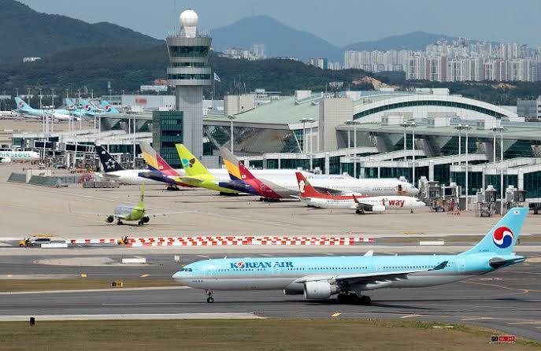
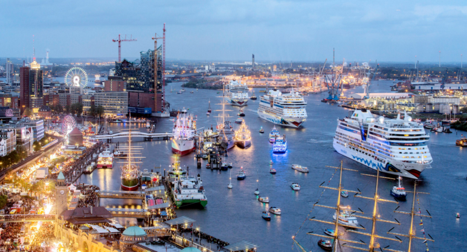
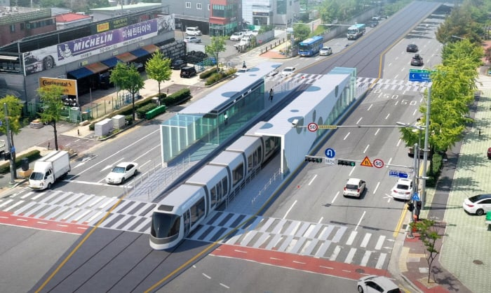

1. 수요조사에 실패한 신도심 건설
주말만 되면 뿔뿔히 흩어져 유령도시 그 자체
2. 도시 역량을 벗어나는 행사 개최
대표적으로 김일성이 88올림픽에 대항하여 했던
평양 세계청년학생축전이 있는데 이건 북한 전체를 바보로 만들었다.

3. 무분별한 공항 조성
수요가 많지도, 위치가 적절하지도 않은 지역에
공항을 만들어버리는 것
도시철도는 이걸 ㅈㄴ 깐깐하게 보는데
고속철도나 공항 같은 애들은 떼쓰면 들어주는 느낌
돈은 지하철보다 많이 깨지지만 이용객은 한참 못미침

4. 내륙 수운
한반도의 강은 홍수기와 갈수기의 수위 차가 크고
배는 육상교통만큼 배차를 늘리거나 통제하기가 어려움

5. 노면전차
차가 많아서 문제라구요?
도로를 없애고 씹창내면 차를 안탈거잖아!!!
댓글
수집 당시 댓글 15개
귀여운도야지 · 3 일 전
서울 출퇴근시간 봐라 지랄같아도 다 차끌고다님ㅋㅋ 2호선타고 한강건널때 출근차들 꽉막혀있는거 보면 어떻게 다니나 싶음
rulru · 3 일 전
3번 4번은 관광자원이리고 변명하고 슈킹.
갸뷰 · 3 일 전
공항은 빼야지. 지금 당장 말많은 가덕도 신공항도 부지의80%가 국방부 껀데 .ㅋㅋㅋ
LustyMoon · 3 일 전
3번은...
안녕전화 · 3 일 전
위장크림 바른건데..
닉네임바꾸고싶다 · 3 일 전
이해하는데 좀 걸렸네 ㅋㅋㅋㅋㅋ
zkxns111 · 3 일 전
수요조사보다 정치논리로 건설하잖아 한잔해
슬랩 · 3 일 전
노면전차는 실제로 도로를 씹창내는게 명목적인 목적 아님?ㅋㅋ
시영이 · 3 일 전
공항은 억까 아니냐 ?..
쎿쮸 · 3 일 전
공항은 사실상 전투기 활주로에 민간스킨 씌운거라
호롤로롤롤로 · 3 일 전
무서운사실) 지어지는 공항 입지를 보면 묘하게도 장사정포, 자주포가 최대사거리에서 쐈을 때 타격받지않는 위치에 있다
ediredo · 3 일 전
그렇게 말씀 하시면 안되고요
절세기회 · 3 일 전
트램보다 의정부처럼 경전철 짓는게 낫지 않나
가입이뭐라고 · 3 일 전
누구를 위한 나라냐ㅋㅋ 말로는 국민을 위한, 정작 국민들 말은 들어처먹지도 않으면서
에스비오피 · 3 일 전
다산 신도시 가보니까 그냥 중심부 제외하고는 상가들 죄다 공실이더라.... 낮에 돌아다니는 건 노인들뿐이고